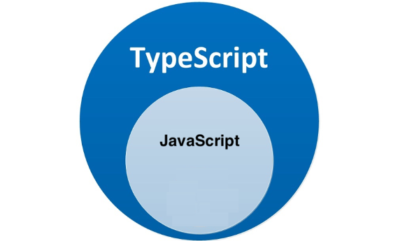

TypeScript
- TypeScript 介绍
- TypeScript 初体验
- TypeScript 常用类型
- TypeScript 高级类型
- TypeScript 类型声明文件
- 在 React 中使用 TypeScript
TypeScript 介绍
- TypeScript 是什么
- TypeScript 为什么要为 JS 添加类型支持?
- TypeScript 相比 JS 的优势
TypeScript 是什么
TypeScript简称：TS，是 JavaScript 的超集，简单来说就是：JS 有的 TS 都有

- TypeScript =
Type+ JavaScript（在 JS 基础之上，为 JS 添加了类型支持） - TypeScript 是微软开发的开源编程语言，可以在任何运行 JavaScript 的地方运行
TypeScript 为什么要为 JS 添加类型支持?
- 背景：JS 的类型系统存在“先天缺陷”，JS 代码中绝大部分错误都是类型错误（Uncaught TypeError）
- 这些经常出现的错误，导致了在使用 JS 进行项目开发时，增加了找 Bug、改 Bug 的时间，严重影响开发效率
为什么会这样？
从编程语言的动静来区分，TypeScript 属于静态类型的编程语言，JavaScript 属于动态类型的编程语言
- 静态类型：编译期做类型检查
- 动态类型：执行期做类型检查
代码编译和代码执行的顺序：1 编译 2 执行
对于 JS 来说：需要等到代码真正去执行的时候才能发现错误（晚）
对于 TS 来说：在代码编译的时候（代码执行前）就可以发现错误（早）
并且，配合 VSCode 等开发工具，TS 可以提前到在编写代码的同时就发现代码中的错误，减少找 Bug、改 Bug 时间
对比：
使用 JS：
- 在 VSCode 里面写代码
- 在浏览器中运行代码 --> 运行时，才会发现错误【晚】
使用 TS：
- 在 VSCode 里面写代码 --> 写代码的同时，就会发现错误【早】
- 在浏览器中运行代码
TypeScript 相比 JS 的优势
- 更早（写代码的同时）发现错误，减少找 Bug、改 Bug 时间，提升开发效率
- 程序中任何位置的代码都有代码提示，随时随地的安全感，增强了开发体验
- 强大的类型系统提升了代码的可维护性，使得重构代码更加容易
- 支持最新的 ECMAScript 语法，优先体验最新的语法，让你走在前端技术的最前沿
- TS 类型推断机制，不需要在代码中的每个地方都显示标注类型，让你在享受优势的同时，尽量降低了学习负担
除此之外，Vue 3 源码使用 TS 重写、Angular 默认支持 TS、React 与 TS 完美配合，TypeScript 已成为大中型前端 项目的首选编程语言
目前，前端最新的开发技术栈：
- React： TS + Hooks
- Vue： TS + Vue3
- 注意： Vue2 对 TS 的支持不好~
TypeScript 初体验
- 安装编译 TS 的工具包
- 编译并运行 TS 代码
- 简化运行 TS 的步骤
安装编译 TS 的工具包
问题：为什么要安装编译 TS 的工具包?
回答：Node.js/浏览器，只认识 JS 代码，不认识 TS 代码。需要先将 TS 代码转化为 JS 代码，然后才能运行
安装命令：
npm i -g typescript- typescript 包：用来编译 TS 代码的包，提供了
tsc命令，实现了 TS -> JS 的转化 - 注意：Mac 电脑安装全局包时，需要添加
sudo获取权限：sudo npm i -g typescriptyarn 全局安装：sudo yarn global add typescript
- typescript 包：用来编译 TS 代码的包，提供了
验证是否安装成功：tsc –v(查看 typescript 的版本)
编译并运行 TS 代码
- 创建 hello.ts 文件（注意：TS 文件的后缀名为
.ts） - 将 TS 编译为 JS：在终端中输入命令，
tsc hello.ts（此时，在同级目录中会出现一个同名的 JS 文件） - 执行 JS 代码：在终端中输入命令，
node hello.js
1 创建 ts 文件 ===> 2 编译 TS ===> 3 执行 JS
- 说明：所有合法的 JS 代码都是 TS 代码，有 JS 基础只需要学习 TS 的类型即可
- 注意：由 TS 编译生成的 JS 文件，代码中就没有类型信息了
简化运行 TS 的步骤
问题描述：每次修改代码后，都要重复执行两个命令，才能运行 TS 代码，太繁琐
简化方式：使用
ts-node包，直接在 Node.js 中执行 TS 代码安装命令：
npm i -g ts-node- ts-node 包提供了
ts-node命令 - 使用方式：
ts-node hello.ts相当于：1 tsc 命令 2 node（注意：ts-node 不会生成 js 文件）
- ts-node 包提供了
解释：ts-node 命令在内部偷偷的将 TS -> JS，然后，再运行 JS 代码
TypeScript 常用类型
TypeScript 是 JS 的超集，TS 提供了 JS 的所有功能，并且额外的增加了：类型系统
- 所有的 JS 代码都是 TS 代码
- JS 有类型（比如，number/string 等），但是 JS 不会检查变量的类型是否发生变化，而 TS 会检查
TypeScript 类型系统的主要优势：可以显示标记出代码中的意外行为，从而降低了发生错误的可能性
- 类型注解
- 常用基础类型
类型注解
示例代码:
let age: number = 18- 说明：代码中的
: number就是类型注解 - 作用：为变量添加类型约束。比如，上述代码中，约定变量 age 的类型为 number 类型
- 解释：约定了什么类型，就只能给变量赋值该类型的值，否则，就会报错
- 错误演示：
xxxxxxxxxx// 错误代码：// 错误原因：将 string 类型的值赋值给了 number 类型的变量，类型不一致let age: number = '18'常用基础类型
可以将 TS 中的常用基础类型细分为两类：1 JS 已有类型 2 TS 新增类型
- JS 已有类型
- 原始类型：
number/string/boolean/null/undefined/symbol - 对象类型：
object（包括，数组、对象、函数等对象）
- TS 新增类型
联合类型、自定义类型(类型别名)、接口、元组、字面量类型、枚举、void、any 等
注意：
- 原始类型在 TS 和 JS 中写法一致
- 对象类型在 TS 中更加细化，每个具体的对象（比如，数组、对象、函数）都有自己的类型语法
原始类型
- 原始类型：number/string/boolean/null/undefined/symbol
- 特点：简单，这些类型，完全按照 JS 中类型的名称来书写
xlet age: number = 18let myName: string = '老师'let isLoading: boolean = false
// 等等...数组类型
数组类型的两种写法：
- 推荐使用
number[]写法
- 推荐使用
xxxxxxxxxx// 写法一：let numbers: number[] = [1, 3, 5]// 写法二：let strings: Array<string> = ['a', 'b', 'c']联合类型
需求：数组中既有 number 类型，又有 string 类型，这个数组的类型应该如何写?
xxxxxxxxxxlet arr: (number | string)[] = [1, 'a', 3, 'b']- 解释：
|（竖线）在 TS 中叫做联合类型，即：由两个或多个其他类型组成的类型，表示可以是这些类型中的任意一种 - 注意：这是 TS 中联合类型的语法，只有一根竖线，不要与 JS 中的或（|| 或）混淆了
类型别名
类型别名（自定义类型）：为任意类型起别名- 使用场景：当同一类型（复杂）被多次使用时，可以通过类型别名，简化该类型的使用
xxxxxxxxxxtype CustomArray = (number | string)[]
let arr1: CustomArray = [1, 'a', 3, 'b']let arr2: CustomArray = ['x', 'y', 6, 7]解释:
- 使用
type关键字来创建自定义类型 - 类型别名（比如，此处的 CustomArray）可以是任意合法的变量名称
- 推荐使用大写字母开头
- 创建类型别名后，直接使用该类型别名作为变量的类型注解即可
- 使用
函数类型
函数的类型实际上指的是：
函数参数和返回值的类型为函数指定类型的两种方式：
- 单独指定参数、返回值的类型
- 同时指定参数、返回值的类型
- 单独指定参数、返回值的类型：
xxxxxxxxxx// 函数声明function add(num1: number, num2: number): number { return num1 + num2}
// 箭头函数const add = (num1: number, num2: number): number => { return num1 + num2}- 同时指定参数、返回值的类型:
xxxxxxxxxxtype AddFn = (num1: number, num2: number) => number
const add: AddFn = (num1, num2) => { return num1 + num2}- 解释：当函数作为表达式时，可以通过类似箭头函数形式的语法来为函数添加类型
- 注意：这种形式只适用于函数表达式
void 类型
- 如果函数没有返回值，那么，函数返回值类型为：
void
xxxxxxxxxxfunction greet(name: string): void { console.log('Hello', name)}注意：
- 如果一个函数没有返回值，此时，在 TS 的类型中，应该使用
void类型
- 如果一个函数没有返回值，此时，在 TS 的类型中，应该使用
xxxxxxxxxx// 如果什么都不写，此时，add 函数的返回值类型为： voidconst add = () => {}// 这种写法是明确指定函数返回值类型为 void，与上面不指定返回值类型相同const add = (): void => {}
// 但，如果指定 返回值类型为 undefined，此时，函数体中必须显示的 return undefined 才可以const add = (): undefined => { // 此处，返回的 undefined 是 JS 中的一个值 return undefined}函数可选参数
- 使用函数实现某个功能时，参数可以传也可以不传。这种情况下，在给函数参数指定类型时，就用到可选参数了
- 比如，数组的 slice 方法，可以
slice()也可以slice(1)还可以slice(1, 3)
xxxxxxxxxxfunction mySlice(start?: number, end?: number): void { console.log('起始索引：', start, '结束索引：', end)}- 可选参数：在可传可不传的参数名称后面添加
?（问号） - 注意：可选参数只能出现在参数列表的最后，也就是说可选参数后面不能再出现必选参数
对象类型
- JS 中的对象是由属性和方法构成的，而 TS 对象的类型就是在描述对象的结构（有什么类型的属性和方法）
- 对象类型的写法:
xxxxxxxxxx// 空对象let person: {} = {}
// 有属性的对象let person: { name: string } = { name: '同学'}
// 既有属性又有方法的对象// 在一行代码中指定对象的多个属性类型时，使用 `;`（分号）来分隔let person: { name: string; sayHi(): void } = { name: 'jack', sayHi() {}}
// 对象中如果有多个类型，可以换行写：// 通过换行来分隔多个属性类型，可以去掉 `;`let person: { name: string sayHi(): void} = { name: 'jack', sayHi() {}}解释:
- 使用
{}来描述对象结构 - 属性采用
属性名: 类型的形式 - 方法采用
方法名(): 返回值类型的形式
- 使用
使用类型别名
- 注意：直接使用
{}形式为对象添加类型，会降低代码的可读性（不好辨识类型和值） - 推荐：使用类型别名为对象添加类型
xxxxxxxxxx// 创建类型别名type Person = { name: string sayHi(): void}
// 使用类型别名作为对象的类型：let person: Person = { name: 'jack', sayHi() {}}带有参数的方法类型
- 如果方法有参数，就在方法名后面的小括号中指定参数类型
xxxxxxxxxxtype Person = { greet(name: string): void}
let person: Person = { greet(name) { console.log(name) }}箭头函数形式的方法类型
- 方法的类型也可以使用箭头函数形式
xxxxxxxxxxtype Person = { greet: (name: string) => void}
let person: Person = { greet(name) { console.log(name) }}对象可选属性
- 对象的属性或方法，也可以是可选的，此时就用到可选属性了
- 比如，我们在使用
axios({ ... })时，如果发送 GET 请求，method 属性就可以省略 - 可选属性的语法与函数可选参数的语法一致，都使用
?来表示
xxxxxxxxxxtype Config = { url: string method?: string}
function myAxios(config: Config) { console.log(config)}接口
当一个对象类型被多次使用时，一般会使用接口（interface）来描述对象的类型，达到复用的目的
解释：
- 使用
interface关键字来声明接口 - 接口名称(比如，此处的 IPerson)，可以是任意合法的变量名称，推荐以
I开头 - 声明接口后，直接使用接口名称作为变量的类型
- 因为每一行只有一个属性类型，因此，属性类型后没有 ;(分号)
- 使用
xxxxxxxxxxinterface IPerson { name: string age: number sayHi(): void}
let person: IPerson = { name: 'jack', age: 19, sayHi() {}}interface vs type
interface（接口）和 type（类型别名）的对比：
相同点：都可以给对象指定类型
不同点:
- 接口，只能为对象指定类型
- 类型别名，不仅可以为对象指定类型，实际上可以为任意类型指定别名
推荐：能使用 type 就是用 type
xxxxxxxxxxinterface IPerson { name: string age: number sayHi(): void}
// 为对象类型创建类型别名type IPerson = { name: string age: number sayHi(): void}
// 为联合类型创建类型别名type NumStr = number | string接口继承
- 如果两个接口之间有相同的属性或方法，可以将公共的属性或方法抽离出来，通过继承来实现复用
- 比如，这两个接口都有 x、y 两个属性，重复写两次，可以，但很繁琐
xxxxxxxxxxinterface Point2D { x: number; y: number }interface Point3D { x: number; y: number; z: number }- 更好的方式:
xxxxxxxxxxinterface Point2D { x: number; y: number }// 继承 Point2Dinterface Point3D extends Point2D { z: number}解释：
- 使用
extends(继承)关键字实现了接口 Point3D 继承 Point2D - 继承后，Point3D 就有了 Point2D 的所有属性和方法(此时，Point3D 同时有 x、y、z 三个属性)
- 使用
元组
- 场景：在地图中，使用经纬度坐标来标记位置信息
- 可以使用数组来记录坐标，那么，该数组中只有两个元素，并且这两个元素都是数值类型 number[]
xxxxxxxxxxlet position: number[] = [116.2317, 39.5427]- 使用 number[] 的缺点：不严谨，因为该类型的数组中可以出现任意多个数字
- 更好的方式：
元组 Tuple - 元组类型是另一种类型的数组，它确切地知道包含多少个元素，以及特定索引对应的类型
xxxxxxxxxxlet position: [number, number] = [39.5427, 116.2317]解释：
- 元组类型可以确切地标记出有多少个元素，以及每个元素的类型
- 该示例中，元素有两个元素，每个元素的类型都是 number
类型推论
在 TS 中，某些没有明确指出类型的地方，TS 的类型推论机制会帮助提供类型
换句话说：由于类型推论的存在，这些地方，类型注解可以省略不写
发生类型推论的 2 种常见场景:
- 声明变量并初始化时
- 决定函数返回值时
xxxxxxxxxx// 变量 age 的类型被自动推断为：numberlet age = 18
// 函数返回值的类型被自动推断为：numberfunction add(num1: number, num2: number) { return num1 + num2}- 推荐：能省略类型注解的地方就省略（
偷懒，充分利用TS类型推论的能力，提升开发效率） - 技巧：如果不知道类型，可以通过鼠标放在变量名称上，利用 VSCode 的提示来查看类型
- 推荐：在 VSCode 中写代码的时候，多看方法、属性的类型，养成写代码看类型的习惯
xxxxxxxxxxconsole.log()document.createElement()
字面量类型
- 思考以下代码，两个变量的类型分别是什么?
xxxxxxxxxxlet str1 = 'Hello TS'const str2 = 'Hello TS'通过 TS 类型推论机制，可以得到答案：
- 变量 str1 的类型为：string
- 变量 str2 的类型为：'Hello TS'
解释:
- str1 是一个变量(let)，它的值可以是任意字符串，所以类型为:string
- str2 是一个常量(const)，它的值不能变化只能是 'Hello TS'，所以，它的类型为:'Hello TS'
注意：此处的 'Hello TS'，就是一个字面量类型，也就是说某个特定的字符串也可以作为 TS 中的类型
任意的 JS 字面量（比如，对象、数字等）都可以作为类型使用
- 字面量：
{ name: 'jack' }[]1820'abc'falsefunction() {}
- 字面量：
xxxxxxxxxxlet str1 = 'Hello TS'const str2 = 'Hello TS123'
str1 = str2
// str2 = str1 不行
使用模式和场景
- 使用模式：字面量类型配合联合类型一起使用
- 使用场景：用来表示一组明确的可选值列表
- 比如，在贪吃蛇游戏中，游戏的方向的可选值只能是上、下、左、右中的任意一个
xxxxxxxxxx// 使用自定义类型:type Direction = 'up' | 'down' | 'left' | 'right'
function changeDirection(direction: Direction) { console.log(direction)}
// 调用函数时，会有类型提示：changeDirection('up')- 解释：参数 direction 的值只能是 up/down/left/right 中的任意一个
- 优势：相比于 string 类型，使用字面量类型更加精确、严谨
【了解】枚举
- 枚举的功能类似于字面量类型+联合类型组合的功能，也可以表示一组明确的可选值
- 枚举：定义一组命名常量。它描述一个值，该值可以是这些命名常量中的一个
xxxxxxxxxx// 创建枚举enum Direction { Up, Down, Left, Right }
// 使用枚举类型function changeDirection(direction: Direction) { console.log(direction)}
// 调用函数时，需要应该传入：枚举 Direction 成员的任意一个// 类似于 JS 中的对象，直接通过 点（.）语法 访问枚举的成员changeDirection(Direction.Up)解释:
- 使用
enum关键字定义枚举 - 约定枚举名称以大写字母开头
- 枚举中的多个值之间通过
,（逗号）分隔 - 定义好枚举后，直接使用枚举名称作为类型注解
- 使用
数字枚举
- 问题：我们把枚举成员作为了函数的实参，它的值是什么呢?
- 解释：通过将鼠标移入 Direction.Up，可以看到枚举成员 Up 的值为 0
- 注意：枚举成员是有值的，默认为：从 0 开始自增的数值
- 我们把，枚举成员的值为数字的枚举，称为：
数字枚举 - 当然，也可以给枚举中的成员初始化值
xxxxxxxxxx// Down -> 11、Left -> 12、Right -> 13enum Direction { Up = 10, Down, Left, Right }
enum Direction { Up = 2, Down = 4, Left = 8, Right = 16 }字符串枚举
- 字符串枚举：枚举成员的值是字符串
- 注意：字符串枚举没有自增长行为，因此，字符串枚举的每个成员必须有初始值
xxxxxxxxxxenum Direction { Up = 'UP', Down = 'DOWN', Left = 'LEFT', Right = 'RIGHT'}枚举实现原理
- 枚举是 TS 为数不多的非 JavaScript 类型级扩展(不仅仅是类型)的特性之一
- 因为：其他类型仅仅被当做类型，而枚举不仅用作类型，还提供值(枚举成员都是有值的)
- 也就是说，其他的类型会在编译为 JS 代码时自动移除。但是，枚举类型会被编译为 JS 代码
xxxxxxxxxxenum Direction { Up = 'UP', Down = 'DOWN', Left = 'LEFT', Right = 'RIGHT'}
// 会被编译为以下 JS 代码：var Direction;
(function (Direction) { Direction['Up'] = 'UP' Direction['Down'] = 'DOWN' Direction['Left'] = 'LEFT' Direction['Right'] = 'RIGHT'})(Direction || Direction = {})- 说明：枚举与前面讲到的字面量类型+联合类型组合的功能类似，都用来表示一组明确的可选值列表
- 一般情况下，推荐使用字面量类型+联合类型组合的方式，因为相比枚举，这种方式更加直观、简洁、高效
any 类型
- 原则:不推荐使用 any!这会让 TypeScript 变为 “AnyScript”(失去 TS 类型保护的优势)
- 因为当值的类型为 any 时，可以对该值进行任意操作，并且不会有代码提示
xxxxxxxxxxlet obj: any = { x: 0 }
obj.bar = 100obj()const n: number = obj解释:以上操作都不会有任何类型错误提示，即使可能存在错误
尽可能的避免使用 any 类型，除非临时使用 any 来“避免”书写很长、很复杂的类型
其他隐式具有 any 类型的情况
- 声明变量不提供类型也不提供默认值
- 函数参数不加类型
注意：因为不推荐使用 any，所以，这两种情况下都应该提供类型
在项目开发中，尽量少用any类型
类型断言
有时候你会比 TS 更加明确一个值的类型，此时，可以使用类型断言来指定更具体的类型。 比如，
xxxxxxxxxxconst aLink = document.getElementById('link')- 注意：该方法返回值的类型是 HTMLElement，该类型只包含所有标签公共的属性或方法，不包含 a 标签特有的 href 等属性
- 因此，这个类型太宽泛(不具体)，无法操作 href 等 a 标签特有的属性或方法
- 解决方式：这种情况下就需要使用类型断言指定更加具体的类型
- 使用类型断言：
xxxxxxxxxxconst aLink = document.getElementById('link') as HTMLAnchorElement解释:
- 使用
as关键字实现类型断言 - 关键字 as 后面的类型是一个更加具体的类型（HTMLAnchorElement 是 HTMLElement 的子类型）
- 通过类型断言，aLink 的类型变得更加具体，这样就可以访问 a 标签特有的属性或方法了
- 使用
另一种语法，使用
<>语法，这种语法形式不常用知道即可:
xxxxxxxxxx// 该语法，知道即可：在react的jsx中使用会报错const aLink = <HTMLAnchorElement>document.getElementById('link')技巧：在浏览器控制台，通过 __proto__ 获取 DOM 元素的类型
typeof
- 众所周知，JS 中提供了 typeof 操作符，用来在 JS 中获取数据的类型
xxxxxxxxxxconsole.log(typeof 'Hello world') // ?- 实际上，TS 也提供了 typeof 操作符：可以在类型上下文中引用变量或属性的类型（类型查询）
- 使用场景:根据已有变量的值，获取该值的类型，来简化类型书写
xxxxxxxxxxlet p = { x: 1, y: 2 }function formatPoint(point: { x: number; y: number }) {}formatPoint(p)
function formatPoint(point: typeof p) {}解释:
- 使用
typeof操作符来获取变量 p 的类型，结果与第一种（对象字面量形式的类型）相同 - typeof 出现在类型注解的位置（参数名称的冒号后面）所处的环境就在类型上下文(区别于 JS 代码)
- 注意：typeof 只能用来查询变量或属性的类型，无法查询其他形式的类型（比如，函数调用的类型）
- 使用
TypeScript 高级类型
TS 中的高级类型有很多，重点学习以下高级类型：
- 泛型 和 keyof
- 索引签名类型 和 索引查询类型
- 映射类型
泛型
- 泛型是可以在保证类型安全前提下，让函数等与多种类型一起工作，从而实现复用，常用于：函数、接口、class 中
- 需求：创建一个 id 函数，传入什么数据就返回该数据本身(也就是说，参数和返回值类型相同)
xxxxxxxxxxfunction id(value: number): number { return value }- 比如，id(10) 调用以上函数就会直接返回 10 本身。但是，该函数只接收数值类型，无法用于其他类型
- 为了能让函数能够接受任意类型，可以将参数类型修改为 any。但是，这样就失去了 TS 的类型保护，类型不安全
xxxxxxxxxxfunction id(value: any): any { return value }- 泛型在保证类型安全(不丢失类型信息)的同时，可以让函数等与多种不同的类型一起工作，灵活可复用
- 实际上，在 C# 和 Java 等编程语言中，泛型都是用来实现可复用组件功能的主要工具之一
创建泛型函数
xxxxxxxxxxfunction id<Type>(value: Type): Type { return value }
function id<T>(value: T): T { return value }解释:
- 语法：在函数名称的后面添加
<>(尖括号)，尖括号中添加类型变量，比如此处的 Type - 类型变量 Type，是一种特殊类型的变量，它处理类型而不是值
- 该类型变量相当于一个类型容器，能够捕获用户提供的类型(具体是什么类型由用户调用该函数时指定)
- 因为 Type 是类型，因此可以将其作为函数参数和返回值的类型，表示参数和返回值具有相同的类型
- 类型变量 Type，可以是任意合法的变量名称
- 语法：在函数名称的后面添加
调用泛型函数
xxxxxxxxxxconst num = id<number>(10)const str = id<string>('a')解释：
- 语法：在函数名称的后面添加
<>(尖括号)，尖括号中指定具体的类型，比如，此处的 number - 当传入类型 number 后，这个类型就会被函数声明时指定的类型变量 Type 捕获到
- 此时，Type 的类型就是 number，所以，函数 id 参数和返回值的类型也都是 number
- 语法：在函数名称的后面添加
同样，如果传入类型 string，函数 id 参数和返回值的类型就都是 string
这样，通过泛型就做到了让 id 函数与多种不同的类型一起工作，实现了复用的同时保证了类型安全
简化泛型函数调用
xxxxxxxxxx// 省略 <number> 调用函数let num = id(10)let str = id('a')解释:
- 在调用泛型函数时，可以省略
<类型>来简化泛型函数的调用 - 此时，TS 内部会采用一种叫做类型参数推断的机制，来根据传入的实参自动推断出类型变量 Type 的类型
- 比如，传入实参 10，TS 会自动推断出变量 num 的类型 number，并作为 Type 的类型
- 在调用泛型函数时，可以省略
推荐：使用这种简化的方式调用泛型函数，使代码更短，更易于阅读
说明：当编译器无法推断类型或者推断的类型不准确时，就需要显式地传入类型参数
泛型约束
- 默认情况下，泛型函数的类型变量 Type 可以代表多个类型，这导致无法访问任何属性
- 比如，id('a') 调用函数时获取参数的长度：
xxxxxxxxxxfunction id<Type>(value: Type): Type { console.log(value.length) return value}
id('a')- 解释：Type 可以代表任意类型，无法保证一定存在 length 属性，比如 number 类型就没有 length
- 此时，就需要为泛型添加约束来
收缩类型(缩窄类型取值范围) - 添加泛型约束收缩类型，主要有以下两种方式：1 指定更加具体的类型 2 添加约束
指定更加具体的类型
比如，将类型修改为 Type[](Type 类型的数组)，因为只要是数组就一定存在 length 属性，因此就可以访问了
xxxxxxxxxxfunction id<Type>(value: Type[]): Type[] { console.log(value.length) return value}添加约束
xxxxxxxxxx// 创建一个接口interface ILength { length: number }
// Type extends ILength 添加泛型约束// 解释：表示传入的 类型 必须满足 ILength 接口的要求才行，也就是得有一个 number 类型的 length 属性function id<Type extends ILength>(value: Type): Type { console.log(value.length) return value}解释:
- 创建描述约束的接口 ILength，该接口要求提供 length 属性
- 通过
extends关键字使用该接口，为泛型(类型变量)添加约束 - 该约束表示：传入的类型必须具有 length 属性
注意:传入的实参(比如，数组)只要有 length 属性即可（类型兼容性)
多个类型变量
泛型的类型变量可以有多个，并且类型变量之间还可以约束(比如，第二个类型变量受第一个类型变量约束) 比如，创建一个函数来获取对象中属性的值：
xxxxxxxxxxfunction getProp<Type, Key extends keyof Type>(obj: Type, key: Key) { return obj[key]}let person = { name: 'jack', age: 18 }getProp(person, 'name')解释:
- 添加了第二个类型变量 Key，两个类型变量之间使用
,逗号分隔。 - keyof 关键字接收一个对象类型，生成其键名称(可能是字符串或数字)的联合类型。
- 本示例中
keyof Type实际上获取的是 person 对象所有键的联合类型，也就是：'name' | 'age' - 类型变量 Key 受 Type 约束，可以理解为：Key 只能是 Type 所有键中的任意一个，或者说只能访问对象中存在的属性
- 添加了第二个类型变量 Key，两个类型变量之间使用
xxxxxxxxxx// Type extends object 表示： Type 应该是一个对象类型，如果不是 对象 类型，就会报错// 如果要用到 对象 类型，应该用 object ，而不是 Objectfunction getProperty<Type extends object, Key extends keyof Type>(obj: Type, key: Key) { return obj[key]}泛型接口
泛型接口：接口也可以配合泛型来使用，以增加其灵活性，增强其复用性
xxxxxxxxxxinterface IdFunc<Type> { id: (value: Type) => Type ids: () => Type[]}
let obj: IdFunc<number> = { id(value) { return value }, ids() { return [1, 3, 5] }}解释:
- 在接口名称的后面添加
<类型变量>，那么，这个接口就变成了泛型接口。 - 接口的类型变量，对接口中所有其他成员可见，也就是接口中所有成员都可以使用类型变量。
- 使用泛型接口时，需要显式指定具体的类型(比如，此处的 IdFunc
)。 - 此时，id 方法的参数和返回值类型都是 number;ids 方法的返回值类型是 number[]。
- 在接口名称的后面添加
JS 中的泛型接口
实际上，JS 中的数组在 TS 中就是一个泛型接口。
xxxxxxxxxxconst strs = ['a', 'b', 'c']// 鼠标放在 forEach 上查看类型strs.forEach
const nums = [1, 3, 5]// 鼠标放在 forEach 上查看类型nums.forEach
- 解释:当我们在使用数组时，TS 会根据数组的不同类型，来自动将类型变量设置为相应的类型
- 技巧:可以通过 Ctrl + 鼠标左键(Mac：Command + 鼠标左键)来查看具体的类型信息
泛型工具类型
- 泛型工具类型:TS 内置了一些常用的工具类型，来简化 TS 中的一些常见操作
- 说明:它们都是基于泛型实现的(泛型适用于多种类型，更加通用)，并且是内置的，可以直接在代码中使用。 这些工具类型有很多，主要学习以下几个:
Partial<Type>Readonly<Type>Pick<Type, Keys>Omit<Type>
Partial
- Partial
用来构造(创建)一个类型，将 Type 的所有属性设置为可选。
xxxxxxxxxxtype Props = { id: string children: number[]}
type PartialProps = Partial<Props>- 解释:构造出来的新类型 PartialProps 结构和 Props 相同，但所有属性都变为可选的。
Readonly
- Readonly
用来构造一个类型，将 Type 的所有属性都设置为 readonly(只读)。
xxxxxxxxxxtype Props = { id: string children: number[]}
type ReadonlyProps = Readonly<Props>- 解释:构造出来的新类型 ReadonlyProps 结构和 Props 相同，但所有属性都变为只读的。
xxxxxxxxxxlet props: ReadonlyProps = { id: '1', children: [] }// 错误演示props.id = '2'- 当我们想重新给 id 属性赋值时，就会报错:无法分配到 "id" ，因为它是只读属性。
Pick
- Pick<Type, Keys> 从 Type 中选择一组属性来构造新类型。
xxxxxxxxxxinterface Props { id: string title: string children: number[]}type PickProps = Pick<Props, 'id' | 'title'>解释:
- Pick 工具类型有两个类型变量:1 表示选择谁的属性 2 表示选择哪几个属性。 2. 其中第二个类型变量，如果只选择一个则只传入该属性名即可。
- 第二个类型变量传入的属性只能是第一个类型变量中存在的属性。
- 构造出来的新类型 PickProps，只有 id 和 title 两个属性类型。
Omit
Omit<K,T>类型让我们可以从另一个对象类型中剔除某些属性，并创建一个新的对象类型：
K：是对象类型名称，T：是剔除K类型中的属性名称

索引签名类型
绝大多数情况下，我们都可以在使用对象前就确定对象的结构，并为对象添加准确的类型。 使用场景:当无法确定对象中有哪些属性(或者说对象中可以出现任意多个属性)，此时，就用到索引签名类型了。
xxxxxxxxxxinterface AnyObject { [key: string]: number}let obj: AnyObject = { a: 1, b: 2,}解释:
- 使用
[key: string]来约束该接口中允许出现的属性名称。表示只要是 string 类型的属性名称，都可以出现在对象中。 - 这样，对象 obj 中就可以出现任意多个属性(比如，a、b 等)。
key 只是一个占位符，可以换成任意合法的变量名称。- 隐藏的前置知识:
JS 中对象({})的键是 string 类型的。
- 使用
数组索引类型签名
- 在 JS 中数组是一类特殊的对象，特殊在数组的键(索引)是数值类型
- 并且，数组也可以出现任意多个元素。所以，在数组对应的泛型接口中，也用到了索引签名类型。
xxxxxxxxxxinterface MyArray<T> { [n: number]: T}let arr: MyArray<number> = [1, 3, 5]解释:
- MyArray 接口模拟原生的数组接口，并使用
[n: number]来作为索引签名类型。 - 该索引签名类型表示:只要是 number 类型的键(索引)都可以出现在数组中，或者说数组中可以有任意多个元素。
- 同时也符合数组索引是 number 类型这一前提。
- MyArray 接口模拟原生的数组接口，并使用
映射类型
- 映射类型:基于旧类型创建新类型(对象类型)，减少重复、提升开发效率。 比如，类型 PropKeys 有 x/y/z，另一个类型 Type1 中也有 x/y/z，并且 Type1 中 x/y/z 的类型相同:
xxxxxxxxxxtype PropKeys = 'x' | 'y' | 'z'type Type1 = { x: number; y: number; z: number }- 这样书写没错，但 x/y/z 重复书写了两次。像这种情况，就可以使用映射类型来进行简化。
xxxxxxxxxxtype PropKeys = 'x' | 'y' | 'z'type Type2 = { [Key in PropKeys]: number }解释:
- 映射类型是基于索引签名类型的，所以，该语法类似于索引签名类型，也使用了 []。
Key in PropKeys表示 Key 可以是 PropKeys 联合类型中的任意一个，类似于 forin(let k in obj)。- 使用映射类型创建的新对象类型 Type2 和类型 Type1 结构完全相同。
- 注意:映射类型只能在类型别名中使用，不能在接口中使用。
根据对象创建
映射类型除了根据联合类型创建新类型外，还可以根据对象类型来创建:
xxxxxxxxxxtype Props = { a: number; b: string; c: boolean }type Type3 = { [key in keyof Props]: number }解释:
- 首先，先执行
keyof Props获取到对象类型 Props 中所有键的联合类型即，'a' | 'b' | 'c'。 - 然后，
Key in ...就表示 Key 可以是 Props 中所有的键名称中的任意一个。
- 首先，先执行
内置映射类型实现分析
- 实际上，前面讲到的泛型工具类型(比如，Partial
)都是基于映射类型实现的。 - 比如，Partial
的实现:
xxxxxxxxxxtype Partial<T> = { [P in keyof T]?: T[P]}
type Props = { a: number; b: string; c: boolean }type PartialProps = Partial<Props>解释:
keyof T即 keyof Props 表示获取 Props 的所有键，也就是:'a' | 'b' | 'c'。- 在 [] 后面添加
?(问号)，表示将这些属性变为可选的，以此来实现 Partial 的功能。 - 冒号后面的
T[P] 表示获取 T 中每个键对应的类型。比如，如果是 'a' 则类型是 number;如果是 'b' 则类型是 string。 - 最终，新类型 PartialProps 和旧类型 Props 结构完全相同，只是让所有类型都变为可选了。
索引访问类型
- 刚刚用到的
T[P]语法，在 TS 中叫做索引访问类型 - 作用:用来查询属性的类型。
xxxxxxxxxxtype Props = { a: number; b: string; c: boolean }type TypeA = Props['a']- 解释:
Props['a']表示查询类型 Props 中属性 'a' 对应的类型 number。所以，TypeA 的类型为 number - 注意:[] 中的属性必须存在于被查询类型中，否则就会报错。
同时查询多个索引的类型
- 索引查询类型的其他使用方式:同时查询多个索引的类型
xxxxxxxxxxtype Props = { a: number; b: string; c: boolean }
type TypeA = Props['a' | 'b'] // string | number- 解释:使用字符串字面量的联合类型，获取属性 a 和 b 对应的类型，结果为: string | number。
xxxxxxxxxxtype TypeA = Props[keyof Props] // string | number | boolean- 解释:使用 keyof 操作符获取 Props 中所有键对应的类型，结果为: string | number | boolean。
在 React 项目中使用 TS
- 创建新项目
- 在现有项目中添加 TS
创建新项目
命令：
npx create-react-app my-app --template typescript说明：在命令行中，添加
--template typescript表示创建支持 TS 的项目项目目录的变化：
在项目根目录中多了一个文件：
tsconfig.json- TS 的配置文件
在 src 目录中，文件的后缀有变化，由原来的 .js 变为
.ts或.tsx.tsts 文件的后缀名.tsx是在 TS 中使用 React 组件时，需要使用该后缀
在 src 目录中，多了
react-app-env.d.ts文件.d.ts类型声明文件，用来指定类型
tsconfig的介绍
- tsconfig.json是typescript项目的配置文件，用于配置typescript
- tsconfig.json配置文件可以通过
tsc --init生成
- 说明：所有的配置项都可以通过鼠标移入的方式，来查看配置项的解释说明。
- tsconfig 文档链接
xxxxxxxxxx{ // 编译选项 "compilerOptions": { // 生成代码的语言版本：将我们写的 TS 代码编译成哪个版本的 JS 代码 // 命令行： tsc --target es5 11-测试TS配置文件.ts "target": "es5", // 指定要包含在编译中的 library "lib": ["dom", "dom.iterable", "esnext"], // 允许 ts 编译器编译 js 文件 "allowJs": true, // 跳过类型声明文件的类型检查 "skipLibCheck": true, // es 模块 互操作，屏蔽 ESModule 和 CommonJS 之间的差异 "esModuleInterop": true, // 允许通过 import x from 'y' 即使模块没有显式指定 default 导出 "allowSyntheticDefaultImports": true, // 开启严格模式 "strict": true, // 对文件名称强制区分大小写 "forceConsistentCasingInFileNames": true, // 为 switch 语句启用错误报告 "noFallthroughCasesInSwitch": true, // 生成代码的模块化标准 "module": "esnext", // 模块解析（查找）策略 "moduleResolution": "node", // 允许导入扩展名为.json的模块 "resolveJsonModule": true, // 是否将没有 import/export 的文件视为旧（全局而非模块化）脚本文件 "isolatedModules": true, // 编译时不生成任何文件（只进行类型检查） "noEmit": true, // 指定将 JSX 编译成什么形式 "jsx": "react-jsx" }, // 指定允许 ts 处理的目录 "include": ["src"]}typescript声明文件
今天几乎所有的 JavaScript 应用都会引入许多第三方库来完成任务需求。
这些第三方库不管是否是用 TS 编写的，最终都要编译成 JS 代码，才能发布给开发者使用。
我们知道是 TS 提供了类型，才有了代码提示和类型保护等机制。
但在项目开发中使用第三方库时，你会发现它们几乎都有相应的 TS 类型，这些类型是怎么来的呢? 类型声明文件
- 类型声明文件：用来为已存在的 JS 库提供类型信息
这样在 TS 项目中使用这些库时，就像用 TS 一样，都会有代码提示、类型保护等机制了。
- TS 的两种文件类型
- 类型声明文件的使用说明
TS 中的两种文件类型
TS 中有两种文件类型：1
.ts文件 2.d.ts文件.ts 文件:
既包含类型信息又可执行代码- 可以被编译为 .js 文件，然后，执行代码
- 用途：编写程序代码的地方
.d.ts 文件:
只包含类型信息的类型声明文件- 不会生成 .js 文件，仅用于提供类型信息,在.d.ts文件中不允许出现可执行的代码，只用于提供类型
- 用途：为 JS 提供类型信息
总结：.ts 是
implementation(代码实现文件)；.d.ts 是 declaration(类型声明文件)如果要为 JS 库提供类型信息，要使用
.d.ts文件
类型声明文件的使用说明
在使用 TS 开发项目时，类型声明文件的使用包括以下两种方式:
- 使用已有的类型声明文件
- 创建自己的类型声明文件
使用已有的类型声明文件
- 内置类型声明文件
- 第三方库的类型声明文件
- 自己提供的
内置类型声明文件
- TS 为 JS 运行时可用的所有标准化内置 API 都提供了声明文件
- 比如，在使用数组时，数组所有方法都会有相应的代码提示以及类型信息:
xxxxxxxxxxconst strs = ['a', 'b', 'c']// 鼠标放在 forEach 上查看类型strs.forEach- 实际上这都是 TS 提供的内置类型声明文件
- 可以通过 Ctrl + 鼠标左键(Mac：Command + 鼠标左键)来查看内置类型声明文件内容
- 比如，查看 forEach 方法的类型声明，在 VSCode 中会自动跳转到
lib.es5.d.ts类型声明文件中 - 当然，像 window、document 等 BOM、DOM API 也都有相应的类型声明(
lib.dom.d.ts)
第三方库的类型声明文件
- 目前，几乎所有常用的第三方库都有相应的类型声明文件
- 第三方库的类型声明文件有两种存在形式:1 库自带类型声明文件 2 由 DefinitelyTyped 提供。
- 库自带类型声明文件：比如，axios
- 查看
node_modules/axios目录
解释：这种情况下，正常导入该库，TS 就会自动加载库自己的类型声明文件，以提供该库的类型声明。
- 由 DefinitelyTyped 提供
- DefinitelyTyped 是一个 github 仓库，用来提供高质量 TypeScript 类型声明
- DefinitelyTyped 链接
- 可以通过 npm/yarn 来下载该仓库提供的 TS 类型声明包，这些包的名称格式为:
@types/* - 比如，@types/react、@types/lodash 等
- 说明：在实际项目开发时，如果你使用的第三方库没有自带的声明文件，VSCode 会给出明确的提示
xxxxxxxxxximport _ from 'lodash'
// 在 VSCode 中，查看 'lodash' 前面的提示- 解释：当安装
@types/*类型声明包后，TS 也会自动加载该类声明包，以提供该库的类型声明 - 补充：TS 官方文档提供了一个页面，可以来查询 @types/* 库
- @types/* 库
创建自己的类型声明文件
- 项目内共享类型
- 为已有 JS 文件提供类型声明
项目内共享类型
如果多个 .ts 文件中都用到同一个类型，此时可以创建 .d.ts 文件提供该类型，实现类型共享。
操作步骤:
- 创建 index.d.ts 类型声明文件。
- 创建需要共享的类型，并使用 export 导出(TS 中的类型也可以使用 import/export 实现模块化功能)。
- 在需要使用共享类型的 .ts 文件中，通过 import 导入即可(.d.ts 后缀导入时，直接省略)。
为已有 JS 文件提供类型声明
- 在将 JS 项目迁移到 TS 项目时，为了让已有的 .js 文件有类型声明。
- 成为库作者，创建库给其他人使用。
- 注意:类型声明文件的编写与模块化方式相关，不同的模块化方式有不同的写法。但由于历史原因，JS 模块化的发展 经历过多种变化(AMD、CommonJS、UMD、ESModule 等)，而 TS 支持各种模块化形式的类型声明。这就导致 ，类型声明文件相关内容又多又杂。
- 演示:基于最新的 ESModule(import/export)来为已有 .js 文件，创建类型声明文件。
类型声明文件的使用说明
说明:TS 项目中也可以使用 .js 文件。
说明:在导入 .js 文件时，TS 会自动加载与 .js 同名的 .d.ts 文件，以提供类型声明。
declare 关键字:用于类型声明，为其他地方(比如，.js 文件)已存在的变量声明类型，而不是创建一个新的变量。
- 对于 type、interface 等这些明确就是 TS 类型的(只能在 TS 中使用的)，可以省略 declare 关键字。
- 对于 let、function 等具有双重含义(在 JS、TS 中都能用)，应该使用 declare 关键字，明确指定此处用于类型声明。
xxxxxxxxxxlet count = 10let songName = '痴心绝对'let position = { x: 0, y: 0}
function add(x, y) { return x + y}
function changeDirection(direction) { console.log(direction)}
const fomartPoint = point => { console.log('当前坐标：', point)}
export { count, songName, position, add, changeDirection, fomartPoint }
定义类型声明文件
xxxxxxxxxxdeclare let count:number
declare let songName: string
interface Position { x: number, y: number}
declare let position: Position
declare function add (x :number, y: number) : number
type Direction = 'left' | 'right' | 'top' | 'bottom'
declare function changeDirection (direction: Direction): void
type FomartPoint = (point: Position) => void
declare const fomartPoint: FomartPoint
export { count, songName, position, add, changeDirection, FomartPoint, fomartPoint}
在现有项目中添加 TS
- CRA 添加 ts 文档
- 如果要在现有的 JS 项目中，添加 TS，需要以下操作：
- 安装包：
yarn add typescript @types/node @types/react @types/react-dom @types/jest - 把
jsconfig.json改成 path.tsconfig.json - 将原来通过 React 脚手架创建的 TS 项目中的 tsconfig.json 中的配置，拷贝到咱们自己的项目中
- 创建
path.tsconfig.json文件，将原来jsconfig.json文件中的内容拿过来
xxxxxxxxxx{ "compilerOptions": { "baseUrl": "./", "paths": { "@/*": ["src/*"], "@scss/*": ["src/assets/styles/*"] } }}
- 在
tsconfig.json中，添加以下配置：
xxxxxxxxxx{ // 添加这一句 "extends": "./path.tsconfig.json",
"compilerOptions": { }}- 将通过 React 脚手架创建的 TS 项目中的
src/react-app-env.d.ts拷贝到咱们自己项目的 src 目录下 - 重启项目
说明
- 项目中使用 TS 时，既可以包含 js 文件，又可以包含 ts 文件
.js、.jsx（使用 JS 时，React 组件对应的文件后缀）.ts、.tsx（使用 TS 时，React 组件对应的文件后缀）、.d.ts
- 在已有项目中，添加 TS 时的推荐模式
- 新的功能用 TS
- 已实现的功能，可以继续保持 JS 文件，慢慢修改为 TS 即可
- React 组件对应的文件后缀，修改为：
.tsx - 工具函数对应的文件后缀，修改为：
.ts或者为其添加类型声明文件.d.ts
项目改造
改造建议
- 项目中使用 TS 时，既可以包含 js 文件，又可以包含 ts 文件
.js、.jsx（使用 JS 时，React 组件对应的文件后缀）.ts、.tsx（使用 TS 时，React 组件对应的文件后缀）、.d.ts
- 在已有项目中，添加 TS 时的推荐模式
- 新的功能用 TS
- 已实现的功能，可以继续保持 JS 文件，慢慢修改为 TS 即可
- React 组件对应的文件后缀，修改为：
.tsx - 工具函数对应的文件后缀，修改为：
.ts或者为其添加类型声明文件.d.ts
修改入口文件
index.ts
- 直接将文件后缀修改为 index.tsx 即可
- 需要重启项目
修改App.js
- 讲App.js 改成app.tsx即可
- 需要安装react-router-dom的类型
xxxxxxxxxxyarn add @types/react-router-dom- 重启
utils工具函数改造
history.js
不需要改造，直接把js改成ts即可
storage.js
- 讲js改成ts
- 修改getTokenInfo
xxxxxxxxxx/** * 从本地缓存中获取 Token 信息 * JSON.parse() 要求参数必须是字符串 * localStorage.getItem() 返回值可能是字符串，也可能是null，所以会报错 */export const getTokenInfo = () => { return JSON.parse(localStorage.getItem(TOKEN_KEY) || '{}')}非空断言
TS 中提供一个运算符：
!非空断言- 如果一个值，它的类型可能是 null 或 undefined，但是，我们在使用时又很确定它的值一定不是 null 或 unde，此时，就可以通过
非空断言来告诉 TS 听哥的，哥很确定它的不是 null 或 undefined
- 如果一个值，它的类型可能是 null 或 undefined，但是，我们在使用时又很确定它的值一定不是 null 或 unde，此时，就可以通过
注意：这个操作是风险的，非空断言，仅仅是让 TS 中的类型检查不再校验 null 或 undefined，但是，如果它的值真的是 null 或 undefined，代码会在运行时报错！！！
整体修改
xxxxxxxxxx// 用户 Token 的本地缓存键名const TOKEN_KEY = 'geek-itcast-21'const CHANNEL_KEY = 'geek-itcast-21-channels'type Token = { token: string refresh_token: string}type Channels = { id: number name: string}[]/** * 从本地缓存中获取 Token 信息 * JSON.parse() 要求参数必须是字符串 * localStorage.getItem() 返回值可能是字符串，也可能是null，所以会报错 */export const getTokenInfo = (): Token => { return JSON.parse(localStorage.getItem(TOKEN_KEY)!) || {}}
/** * 将 Token 信息存入缓存 * @param {Object} tokenInfo 从后端获取到的 Token 信息 */export const setTokenInfo = (tokenInfo: Token): void => { localStorage.setItem(TOKEN_KEY, JSON.stringify(tokenInfo))}
/** * 删除本地缓存中的 Token 信息 */export const removeTokenInfo = () => { localStorage.removeItem(TOKEN_KEY)}
/** * 判断本地缓存中是否存在 Token 信息 */export const hasToken = (): boolean => { return !!getTokenInfo().token}
/** * 保存频道数据到本地 * @param {*} channels */export const setLocalChannels = (channels: Channels): void => { localStorage.setItem(CHANNEL_KEY, JSON.stringify(channels))}
/** * 获取本地的频道数据，，，，，，，如果没有数据，不要默认为空数组 * @returns */export const getLocalChannels = (): Channels => { return JSON.parse(localStorage.getItem(CHANNEL_KEY)!)}
/** * 删除本地的频道数据 */export const removeLocalChannels = (): void => { localStorage.removeItem(CHANNEL_KEY)}
request.js改造
讲js改成ts即可
xxxxxxxxxxasync (err: AxiosError<{ message: string }>) => { // 如果因为网络原因，response没有，给提示消息 if (!err.response) { Toast.info('网络繁忙，请稍后重试') return Promise.reject(err) }
通用组件改造
Icon组件修改
xxxxxxxxxximport React from 'react'import classNames from 'classnames'
type Props = { type: string className?: string onClick?: () => void}function Icon({ type, className, rest }: Props) { return ( <svg {rest} className={classNames('icon', className)} aria-hidden="true"> <use xlinkHref={`#${type}`}></use> </svg> )}
export default Icon
typescript中ref的使用
xxxxxxxxxxconst imgRef = useRef<HTMLImageElement>(null)
const current = imgRef.current!Img懒加载组件修改
xxxxxxxxxximport classnames from 'classnames'import { useEffect, useRef, useState } from 'react'import Icon from '../Icon'import styles from './index.module.scss'type Props = { src: string className?: string alt?: string}const Image = ({ className, src, alt }: Props) => { const imgRef = useRef<HTMLImageElement>(null) // 控制是否在加载 const [loading, setLoading] = useState(true) // 控制是否加载失败 const [error, setError] = useState(false)
// 加载成功 const onLoad = () => { setError(false) setLoading(false) } const onError = () => { setLoading(false) setError(true) } useEffect(() => { // 监听图片 const observer = new IntersectionObserver(([{ isIntersecting }]) => { if (isIntersecting) { // 图片在可视区 const current = imgRef.current! current.src = current.dataset.src! // 取消监听 observer.unobserve(current) } }) observer.observe(imgRef.current!) }, []) return ( <div className={classnames(styles.root, className)}> {/* 加载中 */} {loading && ( <div className="image-icon"> <Icon type="iconphoto" /> </div> )}
{/* 加载出错时显示的内容 */} {error && ( <div className="image-icon"> <Icon type="iconphoto-fail" /> </div> )}
<img alt={alt} ref={imgRef} data-src={src} onLoad={onLoad} onError={onError} /> </div> )}
export default Image
Input组件修改
- 基本改造
xxxxxxxxxximport React, { useEffect, useRef } from 'react'import styles from './index.module.scss'import classNames from 'classnames'interface Props { extra?: string onExtraClick?: () => void className?: string autoFocus?: boolean}export default function Input({ extra, onExtraClick, className, autoFocus, rest}: Props) { // focus const inputRef = useRef<HTMLInputElement>(null) useEffect(() => { if (autoFocus) { inputRef.current?.focus() } }, [autoFocus]) return ( <div className={styles.root}> <input ref={inputRef} className={classNames('input', className)} {rest} /> {extra ? ( <div className="extra" onClick={onExtraClick}> {extra} </div> ) : null} </div> )}
- 剩余参数的支持
InputHTMLAttributes中包含了Input框所有能够支持的属性
xxxxxxxxxxinterface Props extends InputHTMLAttributes<HTMLInputElement> { extra?: string onExtraClick?: () => void className?: string autoFocus?: boolean}- 使用type替代interface
xxxxxxxxxxtype Props = { extra?: string onExtraClick?: () => void className?: string autoFocus?: boolean type?: 'input' | 'password'} & InputHTMLAttributes<HTMLInputElement>TS 中的 &（交叉类型）
https://www.typescriptlang.org/docs/handbook/2/objects.html#intersection-types
交叉类型：
&- 作用：可以理解为取多个类型的并集
联想到了，另一个类型：
|联合类型
xxxxxxxxxx// | 在 TS 中表示： number 和 string 两者中出现哪一个都行type NumStr = number | string
type InputProps = { extra?: string onExtraClick?: () => void className?: string dom?: React.RefObject<HTMLInputElement>}
// & 在 TS 中表示： 最终的类型两者都有type Props = InputProps & InputHTMLAttributes<HTMLInputElement>交叉类型需要注意的地方：同名的属性容易冲突
使用omit优化
xxxxxxxxxxtype Props = Omit< InputHTMLAttributes<HTMLInputElement>, 'type' | 'autoFocus'> & { extra?: string onExtraClick?: () => void className?: string autoFocus?: boolean type?: 'text' | 'password'}Textarea组件改造
xxxxxxxxxximport classNames from 'classnames'import { TextareaHTMLAttributes } from 'hoist-non-react-statics/node_modules/@types/react'import React, { useEffect, useRef, useState } from 'react'import styles from './index.module.scss'type Props = Omit< TextareaHTMLAttributes<HTMLTextAreaElement>, 'maxLength' | 'value' | 'onChange'> & { maxLength?: number className?: string value: string onChange: (e: React.ChangeEvent<HTMLTextAreaElement>) => void}export default function Textarea({ maxLength = 100, className, value, onChange, rest}: Props) { const [content, setContent] = useState(value || '') const handleChange = (e: React.ChangeEvent<HTMLTextAreaElement>) => { setContent(e.target.value)
onChange && onChange(e) } const textRef = useRef<HTMLTextAreaElement>(null) useEffect(() => { textRef.current!.focus() textRef.current!.setSelectionRange(-1, -1) }, []) return ( <div className={styles.root}> {/* 文本输入框 */} <textarea {rest} className={classNames('textarea', className)} maxLength={maxLength} value={value} onChange={handleChange} ref={textRef} />
{/* 当前字数/最大允许字数 */} <div className="count"> {content.length}/{maxLength} </div> </div> )}
NavBar组件改造
xxxxxxxxxximport Icon from '@/components/Icon'import styles from './index.module.scss'import { useHistory } from 'react-router'import classNames from 'classnames'import { ReactNode } from 'react'// import { withRouter } from 'react-router-dom'// 1. withRouter的使用// history match location: 这个组件必须是通过路由配置的 <Route></Route>// 自己渲染的组件，无法获取到路由信息 <NavBar></NavBar>
// 2. 路由提供了几个和路由相关的hook// useHistory useLocation useParamstype Props = { children: string | ReactNode extra?: string onLeftClick?: () => void className?: string}function NavBar({ children, extra, onLeftClick, className }: Props) { const history = useHistory() const back = () => { console.log('123') // 跳回上一页 if (onLeftClick) { onLeftClick() } else { history.go(-1) } } return ( <div className={classNames(styles.root, className)}> {/* 后退按钮 */} <div className="left"> <Icon type="iconfanhui" onClick={back} /> </div> {/* 居中标题 */} <div className="title">{children}</div>
{/* 右侧内容 */} <div className="right">{extra}</div> </div> )}
export default NavBar
AuthRoute组件改造
xxxxxxxxxximport { hasToken } from '@/utils/storage'import { Route, Redirect, useLocation, RouteProps } from 'react-router-dom'interface PrivateRouteProps extends RouteProps { component: React.ComponentType<any>}export default function AuthRoute(props: PrivateRouteProps) { const { component: Component, rest } = props const location = useLocation() // console.log(location) return ( <Route {rest} render={() => { if (hasToken()) { return <Component></Component> } else { return ( <Redirect to={{ pathname: '/login', state: { // 从哪儿来的 from: location.pathname, }, }} ></Redirect> ) } }} ></Route> )}
页面改造
Layout组件
直接把js改成tsx
Login组件
location的处理

- 关于useLocation的使用
xxxxxxxxxxtype LocationState = { from: string}
const location = useLocation<LocationState>()redux-action修改
- 修改action/login.js
xxxxxxxxxximport request from '@/utils/request'import { setTokenInfo, removeTokenInfo } from '@/utils/storage'import { Dispatch } from 'redux'type Token = { token: string refresh_token: string}export const sendCode = (mobile: string) => { return async () => { // 发送请求 await request({ url: '/sms/codes/' + mobile, method: 'get', }) }}
export const saveToken = (payload: Token) => { return { type: 'login/token', payload, }}
/** * 登录功能 * @param {*} data * @returns */
export const login = (data: { mobile: string; code: string }) => { return async (dispatch: Dispatch) => { const res = await request({ method: 'post', url: '/authorizations', data, }) // 保存token到redux中 dispatch(saveToken(res.data)) // 保存到本地 setTokenInfo(res.data) }}
/** * 退出 * @returns */export const logout = () => { return (dispatch: Dispatch) => { removeTokenInfo() dispatch({ type: 'login/logout', }) }}
- Dispatch的分析
索引签名
- 索引签名
- 语法：
[key: string]: any - 应用场景：我要使用一个对象类型，但是，我不确定对象中有什么属性，此时，就可以使用索引签名类型了
xxxxxxxxxx// 可以将这个内容分为两部分，// 冒号前面 `[extraProps: string]` 表示对象中的属性类型 - 键// 冒号后面 `any` 表示属性值的类型 - 值
// [extraProps: string] 表示：// extraProps 是一个任意合法属性名称，比如，可以叫：k 或 key// : string 表示对象属性的类型是 字符串 类型
// 注意：一个对象，它的属性类型可以是： string | number | symbolinterface AnyAction { [extraProps: string]: any}
export interface AnyAction extends Action { // Allows any extra properties to be defined in an action. [extraProps: string]: any}
redux-reducer修改
xxxxxxxxxxtype Token = { token: string refresh_token: string}type ActionType = { type: 'login/token' | 'login/logout' payload: Token}const initValue: Token = { token: '', refresh_token: '',}export default function reducer(state = initValue, action: ActionType) { const { type, payload } = action if (type === 'login/token') { return payload } if (type === 'login/logout') { return {} } return state}类型提取
- types.d.ts
xxxxxxxxxx/** * token的类型 */export type Token = { token: string refresh_token: string}
Profile组件改造
修改redux-reducer
xxxxxxxxxxtype User = { id: string name: string photo: string art_count: number follow_count: number fans_count: number like_count: number}
type Profile = { id: string photo: string name: string mobile: string gender: number birthday: string}
type InitType = { user: User profile: Profile}
type ProfileAction = | { type: 'profile/user' payload: User } | { type: 'profile/profile' payload: Profile }
const initValue: InitType = { user: {}, profile: {},} as InitType
/** * 处理个人信息的reducer * @param {*} state * @param {*} action * @returns */export default function reducer(state = initValue, action: ProfileAction) { // const { type, payload } = action if (action.type === 'profile/user') { return { state, user: action.payload, } } if (action.type === 'profile/profile') { return { state, profile: action.payload, } } return state}
修改redux-action的修改
xxxxxxxxxximport http from '@/utils/request'import { User, Profile, ProfileAction } from '../reducers/profile'import { Dispatch } from 'redux'/** * 保存用户信息 * @param {*} payload * @returns */// actionCreator: 创建action 必须要符合 ProfileAction类型export const saveUser = (payload: User): ProfileAction => { return { type: 'profile/user', payload: payload, }}
/** * 获取用户信息 * @returns Promise */export const getUser = () => { return async (dispatch: Dispatch) => { const res = await http.get('/user') dispatch(saveUser(res.data)) }}
export const saveProfile = (payload: Profile): ProfileAction => { return { type: 'profile/profile', payload, }}
export const getProfile = () => { return async (dispatch: Dispatch) => { const res = await http.get('/user/profile') dispatch(saveProfile(res.data)) }}
// 返回一个全部属性变成可选的类型type PartialProfile = Partial<Profile>// 修改用户的信息// dispatch: Dispatch类型，，，参数必须符合Action类型 {type: T}export const updateProfile = (data: PartialProfile) => { return async (dispatch: any) => { await http.patch('/user/profile', data) dispatch(getProfile()) }}
export const updatePhoto = (fd: FormData) => { return async (dispatch: any) => { await http.patch('/user/photo', fd) dispatch(getProfile()) }}
泛型工具类型 - ReturnType
- 泛型：
xxxxxxxxxxfunction id<Type>(value: Type): Type { return value}
// 尖括号中出现的是 类型id<number>(1)id<string>(1)ReturnType
- 作用：用来获取函数返回值的类型
xxxxxxxxxxconst fn = () => 10
// typeof fn 的结果： () => number// R1 => numbertype R1 = ReturnType<typeof fn>// type R1 = ReturnType<() => number>获取redux状态的类型
https://redux.js.org/usage/usage-with-typescript
- 讲store/index.js修改为store/index.ts
xxxxxxxxxx// 参数1：reducer// 参数2：指定store的初始值// 参数3：指定中间件const store = createStore( reducer, { login: getTokenInfo(), }, composeWithDevTools(applyMiddleware(thunk)))
export type RootState = ReturnType<typeof store.getState>useSelector 的类型
xxxxxxxxxx// 在 TS 中 useSelector 是一个泛型函数，并且它有两个泛型变量，分别是：// 1 整个Redux应用的状态类型// 2 当前要获取的状态类型// 因此，在使用的时候，需要传入两个 泛型变量：// 比如，以下代码中，// 第一个传入了 AppState 也就是整个 Redux 应用的状态类型// 第二个传入了 AppState['profile'] 也就是当前要获取的 profile 状态的类型
const user = useSelector<RootState, RootState['profile']['user']>( (state) => state.profile.user)
// 泛型参数1：指定state的类型// 泛型参数2：指定返回值的类型const user = useSelector((state: RootState) => state.profile.user)
TS 中的索引查询类型
- 语法：
对象类型[键] - 作用：查询 对象类型 中某个属性对应的类型
xxxxxxxxxxtype A = { name: string}
// NameType => stringtype NameTyep = A['name']
Home组件的修改
修改home组件-reducer
xxxxxxxxxximport { SAVE_ALL_CHANNELS, SAVE_ARTICLE_LIST, SAVE_CHANNELS, SAVE_MORE_ARTICLE_LIST,} from '../action_types/home'
type Channel = { id: number name: string}
type MoreAction = { visible: boolean articleId: string channelId: string}
type Ariticle = { art_id: string title: string aut_id: string aut_name: string comm_count: string pubdate: string cover: { type: string images: string[] }}
type Articles = { [index: number]: { timestamp: string list: Ariticle[] }}type HomeType = { userChannels: Channel[] allChannels: Channel[] moreAction: MoreAction articles: Articles}
const initValue: HomeType = { userChannels: [], allChannels: [], // 存储所有的文章列表 articles: {}, moreAction: { visible: false, articleId: '', channelId: '', },} as HomeTypeexport default function reducer(state = initValue, action) {}修改home组件-reducer的修改-完成
xxxxxxxxxximport { SAVE_ALL_CHANNELS, SAVE_ARTICLE_LIST, SAVE_CHANNELS, SAVE_MORE_ARTICLE_LIST,} from '../action_types/home'
type Channel = { id: number name: string}
type MoreAction = { visible: boolean articleId: string channelId: number}
type Ariticle = { art_id: string title: string aut_id: string aut_name: string comm_count: string pubdate: string cover: { type: string images: string[] }}
type Articles = { [index: number]: { timestamp: string list: Ariticle[] }}type HomeType = { userChannels: Channel[] allChannels: Channel[] moreAction: MoreAction articles: Articles}
const initValue: HomeType = { userChannels: [], allChannels: [], // 存储所有的文章列表 articles: {}, moreAction: { visible: false, articleId: '', channelId: -1, },} as HomeType
type ActionType = | { type: 'home/saveChannels' payload: Channel[] } | { type: 'home/saveAllChannels' payload: Channel[] } | { type: 'home/saveArticleList' payload: { channelId: number timestamp: string list: Ariticle[] } } | { type: 'home/saveMoreArticleList' payload: { channelId: number timestamp: string list: Ariticle[] } } | { type: 'home/setMoreAction' payload: MoreAction }export default function reducer(state = initValue, action: ActionType) { // const { type, payload } = action switch (action.type) { case 'home/saveChannels': return { state, userChannels: action.payload, } case 'home/saveAllChannels': return { state, allChannels: action.payload, } case 'home/saveArticleList': const { list, timestamp, channelId } = action.payload
return { state, articles: { state.articles, [channelId]: { timestamp: timestamp, // 如果是loadMore，追加数据，否则，覆盖数据 list: list, }, }, } case 'home/saveMoreArticleList': // const oldList = state.articles[action.payload.channelId].list return { state, articles: { state.articles, [action.payload.channelId]: { timestamp: action.payload.timestamp, list: [ state.articles[action.payload.channelId].list, action.payload.list, ], }, }, } case 'home/setMoreAction': { return { state, moreAction: action.payload, } } default: return state }}
解决问题：request中dispatch的问题
原因： saveToken没有指定返回值类型，
xxxxxxxxxx// actionCreatorexport const saveToken = (payload: Token) => { return { type: 'login/token', payload, }}把type推断为string类型 string类型无法常量类型赋值，所以报错了
解决方案：
xxxxxxxxxx// actionCreatorexport const saveToken = (payload: Token) => { return { type: 'login/token' as const, payload, }}方案2：
xxxxxxxxxx// actionCreatorexport const saveToken = (payload: Token): LoginAction => { return { type: 'login/token', payload, }}
解决问题：logout的错误
原因：store.dispatch的参数必须是一个对象，且要有type属性
xxxxxxxxxx/** * 退出 * @returns */export const logout = (payload: Token) => { return { type: 'login/logout' as const, payload, }}
// 移除本地的tokenremoveTokenInfo()store.dispatch( logout({ token: '', refresh_token: '', }))RootThunkAction的使用
https://redux.js.org/usage/usage-with-typescript#type-checking-redux-thunks
场景：
我们如果需要使用redux-thunk的action，需要指定两个参数的类型，dispatch和getState的类型。
redux-thunk中间件帮助我们提供了一个thunkAction的类型。
xxxxxxxxxx// 获取RootState的类型‘// typeof: 获取store.getState的类型// ReturnType 获取返回值的类型export type RootState = ReturnType<typeof store.getState>
// R：thunk的action的返回类型 void Promise<void>// S: 需要指定个getState的返回类型 RootState// E: extra: 额外的参数 any// A: 需要指定Action的类型 Action AnyAction [extraProps: string]: any// ThunkAction<R, S, E, A>export type RootThunkAction = ThunkAction< Promise<void>, RootState, unknown, AnyAction>
以后，只要是redux-thunk的action的类型，我们只需要指定返回类型为RootThunkAction类型即可，不需要指定dispatch和getState的类型
xxxxxxxxxx/** * 获取用户的频道 * @returns */export const getUserChannels = (): RootThunkAction => { return async (dispatch) => { // 1. 判断用户是否登录 if (hasToken()) { const res = await request.get('/user/channels') dispatch(saveUserChannels(res.data.channels)) } else { // 2. 没有token,从本地获取频道数据 const channels = getLocalChannels() if (channels) { // 没有token，但本地有channels数据 dispatch(saveUserChannels(channels)) } else { // 没有token, 且本地没有channels数据 const res = await request.get('/user/channels') dispatch(saveUserChannels(res.data.channels)) // 保存到本地 setLocalChannels(res.data.channels) } } }}